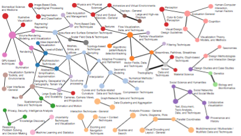
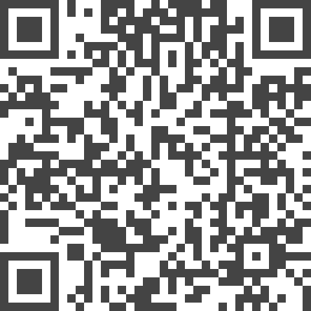

Visualization as Seen Through its Research Paper Keywords

Authors. Petra Isenberg, Tobias Isenberg, Michael Sedlmair, Jian Chen, Torsten Möller
Venue. TVCG (2016)
Abstract. We present the results of a comprehensive multi-pass analysis of visualization paper keywords supplied by authors for their papers published in the IEEE Visualization conference series (now called IEEE VIS) between 1990-2015. From this analysis we derived a set of visualization topics that we discuss in the context of the current taxonomy that is used to categorize papers and assign reviewers in the IEEE VIS reviewing process. We point out missing and overemphasized topics in the current taxonomy and start a discussion on the importance of establishing common visualization terminology. Our analysis of research topics in visualization can, thus, serve as a starting point to (a) help create a common vocabulary to improve communication among different visualization sub-groups, (b) facilitate the process of understanding differences and commonalities of the various research sub-fields in visualization, (c) provide an understanding of emerging new research trends, (d) facilitate the crucial step of finding the right reviewers for research submissions, and (e) it can eventually lead to a comprehensive taxonomy of visualization research. One additional tangible outcome of our work is an online query tool (http://keyvis.org/) that allows visualization researchers to easily browse the 3952 keywords used for IEEE VIS papers since 1990 to find related work or make informed keyword choices.
